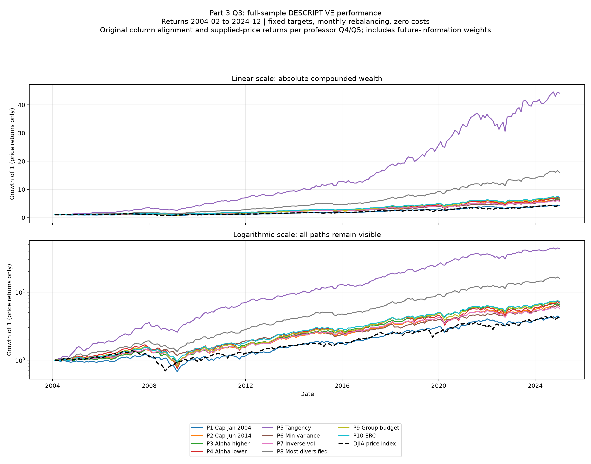

February 2004–December 2024; 251 returns. Fixed Q1 targets, costless monthly rebalancing, RF=0. Includes future-information weights.
Professor Q4/Q5: original dates and alignment, including DJIA and CRM, are retained. Returns are calculated directly from supplied prices; no additional dividend or coupon data are required.
Monthly mean, sample SD and worst return are percent; utility is DECIMAL (mean - 2.5 variance). Skewness is adjusted Fisher-Pearson; Sharpe is monthly. Results are supplied-price returns.
| Mean monthly (%) | Monthly SD (%) | Skewness | Worst month (%) | Worst date | Monthly Sharpe | Monthly utility (decimal) | N | |
|---|---|---|---|---|---|---|---|---|
| Series | ||||||||
| P5 Tangency | 1.598301 | 3.977030 | 0.080486 | -10.814738 | 2008-01 | 0.401883 | 0.012029 | 251 |
| P8 Most diversified | 1.169421 | 3.428509 | 0.303907 | -8.648280 | 2015-08 | 0.341087 | 0.008756 | 251 |
| P6 Min variance | 0.777174 | 3.095638 | -0.085357 | -9.295505 | 2018-02 | 0.251054 | 0.005376 | 251 |
| P10 ERC | 0.855081 | 3.623089 | -0.057786 | -10.096815 | 2008-10 | 0.236009 | 0.005269 | 251 |
| P3 Alpha higher | 0.806934 | 3.429294 | -0.160421 | -9.236965 | 2008-06 | 0.235306 | 0.005129 | 251 |
| P2 Cap Jun 2014 | 0.805300 | 3.897916 | -0.232390 | -12.207688 | 2008-10 | 0.206597 | 0.004255 | 251 |
| P9 Group budget | 0.887497 | 4.397085 | -0.118028 | -13.576567 | 2008-10 | 0.201838 | 0.004041 | 251 |
| P7 Inverse vol | 0.778219 | 3.890922 | -0.199099 | -12.165582 | 2008-10 | 0.200009 | 0.003997 | 251 |
| P1 Cap Jan 2004 | 0.657229 | 3.987761 | -0.239772 | -13.002114 | 2008-10 | 0.164811 | 0.002597 | 251 |
| DJIA price index | 0.674301 | 4.163799 | -0.394935 | -14.060435 | 2008-04 | 0.161944 | 0.002409 | 251 |
| P4 Alpha lower | 0.913684 | 5.288584 | -0.084377 | -16.494452 | 2020-03 | 0.172765 | 0.002145 | 251 |
